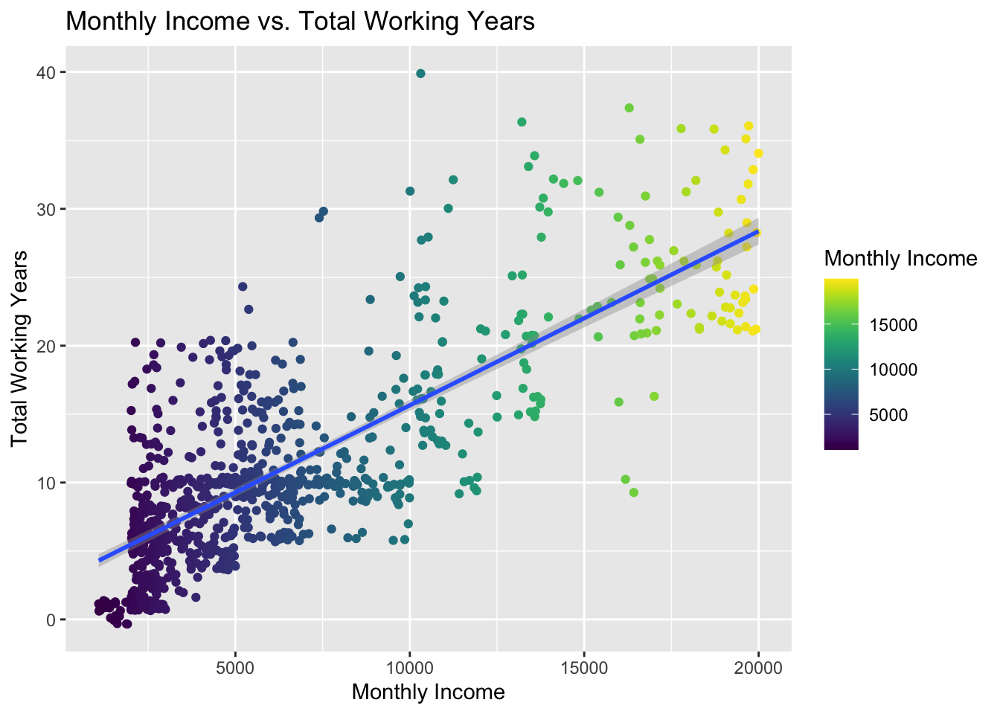

DDS Analytics
Nicole Norelli
11/24/2020
DDS Analytics
Talent Management Solutions
Frito Lay Attrition, Salary, and Job Roles
Executive Summary
EDA conclusions: Overtime, monthly income, stock option, job involvement, and years in current role were most useful for predicting attrition
Two Naive Bayes attrition prediction models (different options depending on intended use)
One regression monthly income prediction model using job level, role, and total working years
Additional observations regarding sales representatives, stock options, and high potential employees
EDA
Visualization of Factors Associated with Attrition
##
## Pearson's Chi-squared test with Yates' continuity correction
##
## data: table(attrition$OverTime, attrition$Attrition)
## X-squared = 62.762, df = 1, p-value = 2.333e-15##
## No Yes
## No 518.5517 99.44828
## Yes 211.4483 40.55172##
## No Yes
## No 558 60
## Yes 172 80##
## Two Sample t-test
##
## data: MonthlyIncome by Attrition
## t = 4.6199, df = 868, p-value = 4.422e-06
## alternative hypothesis: true difference in means is not equal to 0
## 95 percent confidence interval:
## 1114.207 2760.222
## sample estimates:
## mean in group No mean in group Yes
## 6702.000 4764.786##
## Two Sample t-test
##
## data: YearsInCurrentRole by Attrition
## t = 4.6596, df = 868, p-value = 3.665e-06
## alternative hypothesis: true difference in means is not equal to 0
## 95 percent confidence interval:
## 0.8949634 2.1976002
## sample estimates:
## mean in group No mean in group Yes
## 4.453425 2.907143Employees who leave are more likely to:
(Top three factors)
Work overtime (X(1) = 62.76, p<.0001)
Have lower monthly income (t = 4.62, p<.0001)
Have lower job involvement scores
Also:
Have spent less time in their current role (t = 4.45, p<.0001)
Be in a Sales Rep, HR, or Lab Tech job role
Additional promising variables with respect to attrition:
Employees who leave are more likely to:
Be Single
Be Younger
Report worse (1) work life balance
Have less years at the company
Have less time with their current manager
Take stock options 0 and 3
Have less total working years
Have the lowest job level
Be further from home
Be less satisfied with their environment
Variables with less difference in attrition rate:
Employees who separate are more likely:
To have an education in HR, Marketing, or a Technical degree
Report less job satisfaction
Have more business travel
Work in the sales department
Variables without much difference in attrition rate:
Variables that do not appear helpful for predicting attrition:
Hourly Rate, Daily Rate, Monthly Rate, Percent Salary Hike, Performance Rating
Gender, Employee Number, Standard Hours, Over 18, Employee Count, ID
Examine correlations among quantitative variables:
Building a Model to Predict Attrition
Exclude:
Hourly Rate, Daily Rate, Monthly Rate, Percent Salary Hike, Performance Rating, Gender, Employee Number, Standard Hours, Over 18, Employee Count, and ID, as they have little or no difference in attrition
Reduce number of predictors:
From the EDA, Education, Education Field, Years Since Last Promotion, Relationship Satisfaction, Job Satisfaction, and Department appear to have less potential for predicting attrition.
Feature Selection Algorithm
## Boruta performed 99 iterations in 20.59972 secs.
## 13 attributes confirmed important: Age, JobInvolvement, JobLevel,
## JobRole, MaritalStatus and 8 more;
## 17 attributes confirmed unimportant: BusinessTravel, DailyRate,
## DistanceFromHome, Education, EducationField and 12 more;
## 5 tentative attributes left: Department, EnvironmentSatisfaction,
## JobSatisfaction, NumCompaniesWorked, YearsSinceLastPromotion;
A random forest feature selection algorithm (Boruta) was then used to suggest additional variables to exclude from the final model.
At this point, I used trial and error to decide on the final predictors to include in the models.
Possible NB Models for Attrition
## [1] 0.7868582## [1] 0.823707## [1] 0.5980378## [1] 0.6805638## [1] 0.6743877## [1] 0.7724246Two models to predict attrition:
Naive Bayes model with 13 variables:
Overtime, Monthly Income, Stock Option Level, Job Involvement, Years in Current Role, Total Working Years, Age, Job Level, Years at Company, Job Role, Years with Current Manager, Work Life Balance, Number Companies Worked
Mean sensitivity: 82%
Mean specificity: 60%
Useful if misidentifying retained employees has a high cost
Naive Bayes model with 5 variables:
As the data set was unbalanced (there was 16% attrition), this model was developed with a downsampling technique that balanced the number of retained and separated employees. It was then tested on an unbalanced test set to determine how well it will work on real world data that will most likely have more retained than separated employees.
Variables: Overtime, Monthly Income, Stock Option Level, Job Involvement, Years in Current Role
Mean sensitivity: 68%
Mean specificity: 77%
If better prediction of attrition is desirable, and the costs associated with incorrectly identifying retained employees is low, this model is useful.
Monthly Income and Job Level, Job Role, and Total Working Years
A visualization:

Regression Model to Predict Monthly Income
##
## Call:
## lm(formula = MonthlyIncome ~ JobLevel + JobRole + TotalWorkingYears,
## data = attrition)
##
## Residuals:
## Min 1Q Median 3Q Max
## -3989.9 -631.3 -9.4 616.8 4144.6
##
## Coefficients:
## Estimate Std. Error t value Pr(>|t|)
## (Intercept) -103.243 203.291 -0.508 0.61168
## JobLevel 2795.329 81.784 34.179 < 2e-16 ***
## JobRoleHuman Resources -321.962 251.744 -1.279 0.20127
## JobRoleLaboratory Technician -597.329 168.984 -3.535 0.00043 ***
## JobRoleManager 4002.415 228.696 17.501 < 2e-16 ***
## JobRoleManufacturing Director 137.309 167.212 0.821 0.41178
## JobRoleResearch Director 3993.674 214.342 18.632 < 2e-16 ***
## JobRoleResearch Scientist -324.522 169.387 -1.916 0.05572 .
## JobRoleSales Executive -66.048 144.221 -0.458 0.64709
## JobRoleSales Representative -410.303 211.660 -1.939 0.05289 .
## TotalWorkingYears 47.998 7.951 6.037 2.34e-09 ***
## ---
## Signif. codes: 0 '***' 0.001 '**' 0.01 '*' 0.05 '.' 0.1 ' ' 1
##
## Residual standard error: 1063 on 859 degrees of freedom
## Multiple R-squared: 0.9472, Adjusted R-squared: 0.9466
## F-statistic: 1541 on 10 and 859 DF, p-value: < 2.2e-16## [1] 1071.068